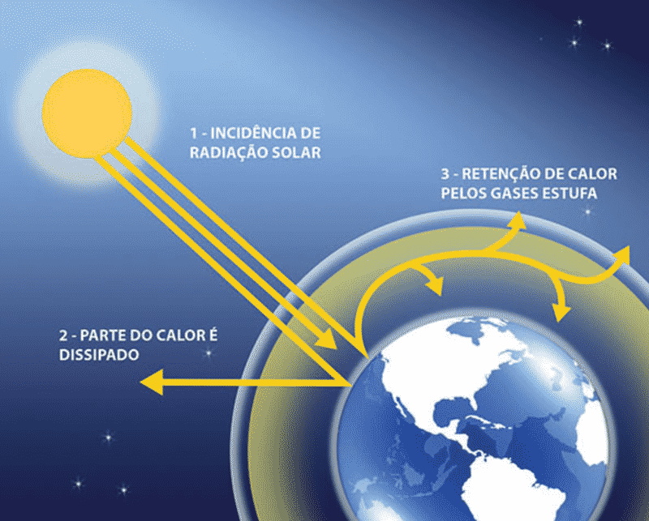
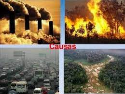

Efeito Estufa
O que é o efeito estufa?
Efeito estufa é um fenômeno natural de aquecimento térmico da Terra, essencialpara manter a temperatura do planeta em condições ideais para a sobrevivência dos seres vivos Sem o efeito estufa natural, a Terra seria muito fria, dificultando o desenvolvimento das espécies.
Os raios solares, ao serem emitidos sobre a Terra, têm dois destinos: parte é absorvido pelo planeta e transformado em calor, para manter a atmosfera quente; enquanto que a outra é refletida e direcionada ao espaço, na forma de radiação ultravioleta.
Com a eliminação de muitos gases poluidores, como o monóxido de carbono e outros que provocam o efeito estufa, mais da metade da radiação acaba por ficar retida na superfície do planeta, devido a ação refletora dessa camada de gases.
O excesso dos gases estufa, que agem como isolantes por absorver a energia irradiada,formam uma espécie de "cobertor térmico" em torno do planeta, impedindo que o calor volte para o espaço.
O fenômeno do efeito estufa também acontece em outros planetas.No caso de Vênus, por exemplo, a temperatura é superior a 470ºC devido ao acumulo de anidrido carbônico contido na sua atmosfera.

Quais são as causas do efeito estufa?
Industrialização
A principal causa do efeito estufa é a industrialização. Devido a esse processo, a queima de combustíveis de origem fóssil se intensificou nos últimos séculos. Os principais produtos da reação de combustão desses reagentes são os gases citados anteriormente como os principais para o efeito estufa. Assim, com a crescente concentração deles na atmosfera, o efeito estufa é intensificado.
Excesso de meios de locomoção poluentes
Entretanto, pode-se ressaltar que não são só as industrias as responsáveis pelo aumento da emissão, há também o demasiado uso dos meios de locomoção. Veículos como carros, ônibus, trens, navios, entre outros, dependem da reação de combustão para que seja liberada energia para o funcionamento.
Desmatamento
É de conhecimento geral que a retirada de árvores e outras vegetações das florestas vem sendo incentivada pelos governos devido às políticas de incentivo à agropecuária e à indústria madeireira. Entretanto, o que não é avaliado são as consequências dessas ações a médio e longo prazo.

Qual o papel das florestas?
É de extrema importância saber que as florestas tem um efeito resfriador, que atua junto com o efeito estufa para controlar as temperaturas terrestres. Dessa forma, ao se derrubar as matas, damos fim a esse efeito resfriador, deixando o efeito estufa com maior intensidade e provocando ainda mais o aquecimento global. Em florestas tropicais tem mais vigor do que e florestas temperadas, dessa forma, o desmatamento em florestas localizadas nos trópicos – como a Amazônia – tem mais repercussão no clima global.Nessa mesma perspectiva, temos que considerar também as consequências que o setor da agropecuária promove. Devido ao uso de fertilizantes nitrogenados nos solos agrícolas, a fixação de nitrogênio feita através de micro-organismos, a adição de excrementos de origem animal entre outras atividades são agentes de uma grande parte das emissões de óxido nitroso. Nesse escopo, a queima de resíduos agrícolas, assim como a queima de combustível fóssil, libera inúmeros gases maléficos. Ademais, o cultivo do arroz irrigado por inundação também emite uma quantidade significativa de gás metano na atmosfera. Segundo uma pesquisa do IPCC, mais da metade das emissões de metano feitas pelo homem tem origem na agricultura e pecuária.
Consequências do efeito Estufa futuramente:
O derretimento das calotas polares e o consequente aumento do nível do mar. Isso acontece devido à elevação da temperatura terrestre devido ao aumento da capacidade da atmosfera de absorver o calor provindo do sol. E como o gelo dos polos derrete, o nível do mar consequentemente sobe. Assim, temos o outro ponto que são as inundações nas latitudes do norte e pacífico equatorial e as perdas de terras em decorrência do aumento do nível do mar e as possíveis ondas migratórias decorrentes disso.
Nesse mesmo escopo, temos o agravamento da segurança alimentar devido ao prejuízo que o aquecimento global causa às colheitas e à pesca. E assim, podem ocorrer diversos conflitos em decorrência dessa escassez de recursos naturais.
Por último, é importante citar que vários problemas de saúde podem ser ocasionados tanto pelo aumento dos gases do efeito estufa na atmosfera quanto pelo aumento da temperatura global.
O que podemos fazer para diminuir esse impacto?
Reduza a utilização de transportes poluentes em pequenos trajetos, vá a pé ou utilize bicicleta, patinete, skate, entre outros veículos que não precisam de combustível para sua utilização
Use produtos biodegradáveis a fim de diminuir a quantidade de lixo que demora anos para se decompor.
Incentive a coleta seletiva para dar a destinação correta para aqueles resíduos que não são biodegradáveis.
Por fim, vale ressaltar que o mais importante disso tudo é ter consciência desse problema e que ele está ocorrendo em escala global. Assim, devemos promover e incentivar sempre as práticas que podem reduzir o impacto gerado pelo efeito estufa.